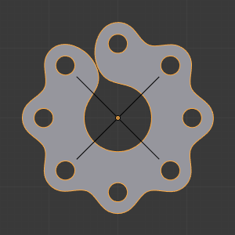

Array Modifier¶
The Array modifier creates an array of copies of the base object, with each copy being offset from the previous one in any of a number of possible ways. Vertices in adjacent copies can be merged if they are nearby, allowing smooth Subdivision Surface frameworks to be generated.
This modifier can be useful when combined with tileable meshes for quickly developing large scenes. It is also useful for creating complex repetitive shapes.
Multiple Array modifiers may be active for an object at the same time (e.g. to create complex three-dimensional constructs).
Options¶
The Array modifier.
- Fit Type
Controls how the length of the array is determined. There are three choices, activating respectively the display of the Curve, Length or Count settings explained below:
- Fit Curve
- Generates enough copies to fit within the length of the curve object specified in Curve.
- Fit Length
- Generates enough copies to fit within the fixed length given by Length.
- Fixed Count
- Generates the number of copies specified in Count.
Note
- Both Fit Curve and Fit Length use the local coordinate system size of the base object, which means that scaling the base object in Object Mode will not change the number of copies generated by the modifier.
- Fit Length uses the local coordinate system length of the curve, which means that scaling the curve in Object Mode will not change the number of copies generated by the modifier.
- Applying the scale can be useful for both.
Offset¶
- Constant Offset, X, Y, Z
- Adds a constant translation component to the duplicate object’s offset. X, Y and Z constant components can be specified.
- Relative Offset, X, Y, Z
Adds a translation equal to the object’s bounding box size along each axis, multiplied by a scaling factor, to the offset. X, Y and Z scaling factors can be specified.

Relative offset (0.5, 1.0 and 1.5) examples.
- Object Offset
Adds a transformation taken from an object (relative to the current object) to the offset. It is good practice to use an Empty object centered or near to the initial object. E.g. by rotating this Empty a circle or helix of objects can be created.

Object offset example.
Merge¶
- Merge
- If enabled, vertices in each copy will be merged with vertices in the next copy that are within the given Distance.
- First Last
If enabled and Merge is enabled, vertices in the first copy will be merged with vertices in the last copy, again if they are within Distance range. This is useful for circular objects.
First Last merge example.¶ Subdivision discontinuity caused by not merging vertices between first and last copies (First Last off).

Subdivision discontinuity eliminated by merging vertices between first and last copies (First Last on).
- Distance
- Controls the merge distance for Merge and First Last.
UVs¶
- U Offset, V Offset
- Shifts UVs of each new duplicate by a settable amount.
Cap¶
- Start Cap / End Cap
This allows either endpoints of the array to have a different mesh subsisted.
For the start: as if it was in position -1, i.e. one “array step” before the first “regular” array copy. For the end: as if it was in position n + 1, i.e. one “array step” after the last “regular” array copy.
When Merge is activated, and the cap vertices are within the Distance threshold, they will be merged.
Note
The start/end cap objects currently do not support the First Last option.
Hints¶
Offset Calculation¶
The transformation applied from one copy to the next is calculated as the sum of the three different components (Relative, Constant and Object), each of which can be enabled/disabled independently of the others. This allows, for example, a relative offset of (1.0, 0.0, 0.0) and a constant offset of (0.1, 0.0, 0.0), giving an array of objects neatly spaced along the X axis with a constant 0.1 unit between them, whatever the original object’s size.
Examples¶

A chain created from a single link. Sample blend-file.
A tentacle created with an Array Modifier followed by a Curve Modifier.
Fractal¶

Multi-level array animated with motion blur. |

Fractal created with multiple arrays. Sample blend-file. |